MENA COSMETICS · เล่ม 2 จาก 3
คู่มือผู้อนุมัติ — หัวหน้างาน · ผู้บริหาร
สำหรับคนที่ต้องตัดสินใบลาของคนอื่น — รับการ์ดในไลน์ อนุมัติ ไม่อนุมัติ หรือขอเอกสารเพิ่ม
และเข้าใจว่าใบลาแต่ละใบวิ่งผ่านใครบ้างตามลำดับ
ฉบับวันที่ 16 ตุลาคม 2569 · ระบบ ลางาน MENA COSMETICS
อนุมัติ
กดในการ์ดได้เลย
ไม่ต้องเปิดหน้าอื่น
ไม่อนุมัติ
ต้องมีเหตุผล
ระบบเปิดหน้าให้พิมพ์
ขอเอกสาร
ใบค้างรอผู้ลา
ยังไม่ถูกตัดสิน
ไม่กดเลย
ถูกเตือนซ้ำ
ทุก 4 ชั่วโมงทำงาน (ค่าตั้งต้น)
01
ลำดับขั้นอนุมัติ — ใบลาวิ่งไปหาใคร
ใบลาปกติผ่าน 3 ชั้น ใครอยู่ชั้นไหนของพนักงานแต่ละคน ฝ่ายบุคคลตั้งไว้ที่หน้า ผังอำนาจอนุมัติ
ผู้ลาส่งใบลา → ชั้น 1 หัวหน้างาน (คนเดียวตามผัง) → ชั้น 2 HR (HR คนไหนกดก่อนก็จบชั้น) → ชั้น 3 ผู้บริหารในสาย (คนไหนกดก่อนก็จบ) → อนุมัติแล้ว + หักโควตา
| ผู้ลาเป็นใคร / ผังตั้งไว้แบบไหน | ใบลาวิ่งไปตามลำดับ |
|---|
| พนักงาน · พนักงานพิเศษ ที่มีหัวหน้างาน | หัวหน้างาน → HR → ผู้บริหาร |
| ไม่มีหัวหน้างานในผัง หรือหัวหน้างานถูกปิดบัญชี | ข้ามชั้น 1 → HR → ผู้บริหาร |
| ผู้ลาเป็นหัวหน้างานเอง | ข้ามชั้น 1 → HR → ผู้บริหาร |
| ผู้ลาเป็น HR | ข้ามชั้น 1 และ 2 → ผู้บริหาร |
| ผู้ลาเป็นผู้บริหาร | อนุมัติอัตโนมัติทันที |
| ผู้อนุมัติขั้นแรกในผังเป็นผู้บริหาร (เช่น พนักงานที่ขึ้นตรงกับผู้บริหาร) | ผู้บริหารคนนั้นอนุมัติ ในนามหัวหน้างาน → ไม่ผ่าน HR → ถ้าชั้น 3 ในผังมีผู้บริหารคนอื่น ไปต่อที่คนนั้น ถ้าไม่มี จบที่ขั้นแรก (หัวข้อ 6) |
ชั้น 3 ส่งให้ผู้บริหารคนไหน
- ผังติ๊กผู้บริหารไว้ และคนนั้นใช้งานอยู่ + ผูกไลน์แล้ว → ส่งเฉพาะคนที่ติ๊ก
- ผังยังไม่เคยติ๊กผู้บริหารเลย → ส่งให้ ผู้บริหารทุกคน (กันใบค้าง)
- ผังติ๊กไว้ แต่ทุกคนยังรับใบไม่ได้ (ยังไม่ผูกไลน์ / ปิดบัญชี) → HR ตัดสินแทนผู้บริหาร
HR ตัดสินแทนผู้บริหารได้เมื่อไหร่
- ผู้บริหารในสายรับใบไม่ได้ (ข้อสุดท้ายด้านบน) หรือ
- ผู้บริหาร ถูกเตือนซ้ำแล้วอย่างน้อย 1 ครั้ง ยังไม่กด — HR จะได้การ์ดเตือนคู่กันทุกรอบ และเห็นใบนี้ในหน้าอนุมัติเป็น ชั้น 3 (HR แทนผู้บริหาร)
(ระหว่างที่ผู้บริหารขอเอกสารจากผู้ลาอยู่ HR ยังตัดสินแทนไม่ได้)
- HR ตัดสินแทนแล้ว หมายเหตุจะขึ้นต้นว่า [HR ตัดสินแทนผู้บริหาร] และผู้บริหารในสายได้การ์ดแจ้งว่าใบปิดแล้ว
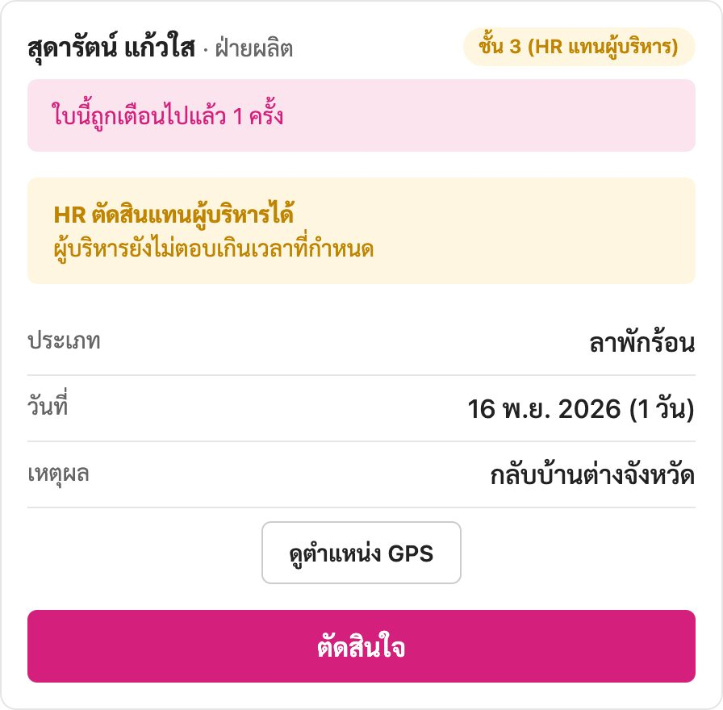
มุมมอง HR — ใบที่ผู้บริหารโดนเตือนแล้วยังไม่กด ขึ้นป้าย ชั้น 3 (HR แทนผู้บริหาร)
กติกาที่ใช้ทุกชั้น
ตัดสินใบลาของตัวเองไม่ได้ ทุกชั้น · ต้องตัดสินทีละชั้นตามลำดับ ข้ามชั้นที่ยังค้างไม่ได้ ·
ชั้นที่มีหลายคน (HR / ผู้บริหาร) คนแรกที่กดคือผลของชั้นนั้น คนที่กดทีหลังจะขึ้นว่ามีผู้อื่นตัดสินไปแล้ว
ผู้บริหารเห็นใบที่รอ HR (ชั้น 2) ด้วย และกดแทน HR ในชั้นนั้นได้
ไม่อนุมัติชั้นไหนก็ตาม = ใบลาจบเป็น ปฏิเสธ ทันที ไม่วิ่งต่อ และคืนวันที่กันไว้ให้ผู้ลา
02
การ์ดขออนุมัติในไลน์
พอใบลาถึงชั้นของคุณ ไลน์บริษัทจะส่งการ์ด ขออนุมัติชั้น N มาให้ พร้อมชื่อผู้ลา แผนก ประเภท วันที่ จำนวน และเหตุผล
- กด "✅ อนุมัติ" ในการ์ดอนุมัติได้ทันทีในแชท ระบบตอบกลับว่า อนุมัติเรียบร้อย แล้วส่งใบต่อชั้นถัดไปเอง
- กด "❌ ไม่อนุมัติ (ระบุเหตุผล)"ระบบเปิดหน้าอนุมัติของใบนั้นขึ้นมา ให้พิมพ์เหตุผลก่อนกด (การ์ดกดไม่อนุมัติตรง ๆ ไม่ได้ เพราะต้องมีเหตุผลเสมอ)
- แตะรูปในการ์ดถ้าผู้ลาแนบรูป (เช่น ใบรับรองแพทย์) แตะเพื่อดูเต็ม · GPS ดูแผนที่ เปิดตำแหน่งที่ผู้ลากดส่ง
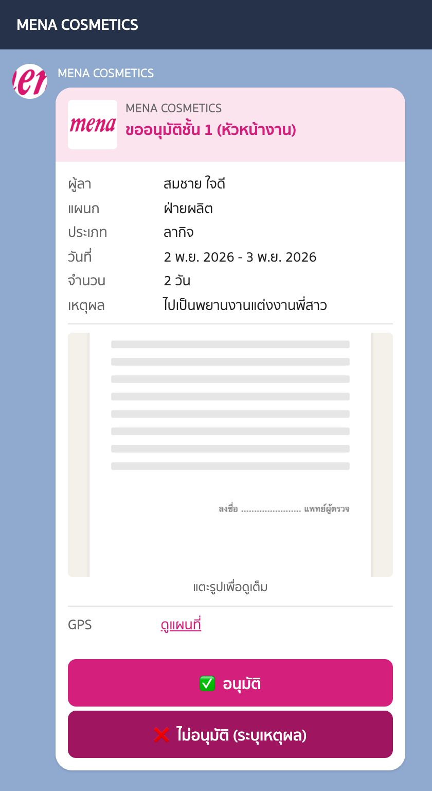
การ์ดขออนุมัติชั้น 1 (หัวหน้างาน) — ภาพจำลองการ์ดจากข้อมูลที่ระบบสร้างจริง
ในการ์ดอาจมีแถบเตือนเพิ่ม:
- ⚠️ แจ้งไม่ทันกำหนด — ลากะทันหัน/ฉุกเฉิน พร้อมเหตุผลของผู้ลา
- ⚠️ ไม่มีพิกัดยืนยัน ผู้ลาเปิด GPS ไม่ได้ และบอกเหตุผลไว้ — ผู้อนุมัติเป็นคนตัดสินเองว่าเชื่อได้ไหม
- เอกสาร: ยังไม่แนบ — ผู้ลาจะแนบตามมาภายหลัง (ลาป่วยที่ต้องมีใบแพทย์)
- ขออนุมัติยกเลิกวันลา — เป็นใบขอยกเลิก ไม่ใช่ใบลาใหม่ (หัวข้อ 7)
03
หน้ารายการรออนุมัติ
กดเมนู อนุมัติ ด้านล่างแชท จะเห็นทุกใบที่รอคุณอยู่ เรียง รอนานที่สุดขึ้นก่อน
ป้ายมุมขวาบอกว่าคุณตัดสินในชั้นไหน ถ้าไม่มีใบรออยู่จะขึ้นว่า ไม่มีรายการรออนุมัติ
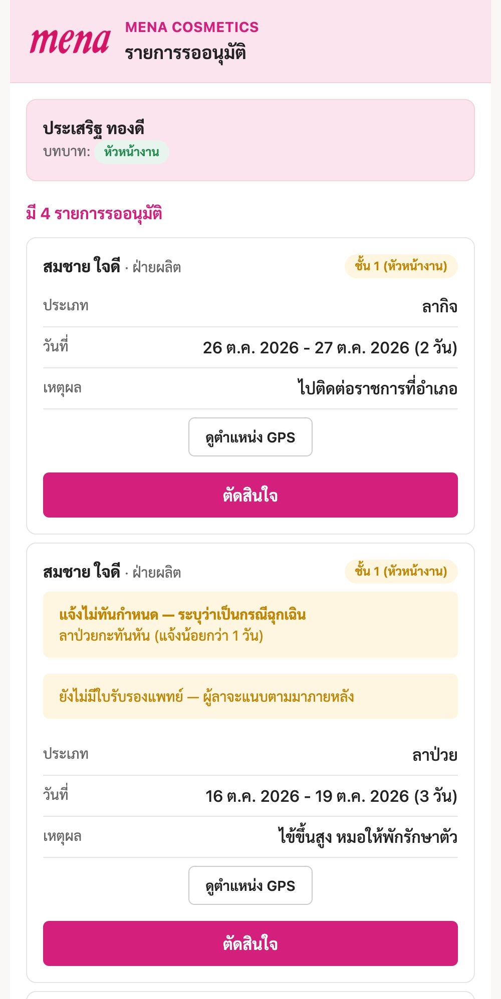
รายการของหัวหน้างาน — บนสุดบอกชื่อและบทบาทของคุณ แต่ละใบมีปุ่ม ตัดสินใจ
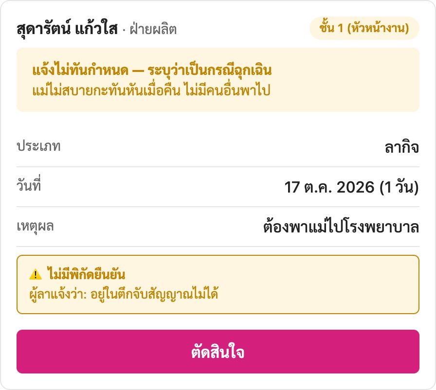
ใบที่มีแถบเตือน — แจ้งไม่ทันกำหนด (สีเหลือง) และ ไม่มีพิกัดยืนยัน พร้อมเหตุผลที่ผู้ลาเขียน
- ดูตำแหน่ง GPS เปิดแผนที่ตำแหน่งตอนกดส่ง · ไฟล์แนบตอนส่ง / แนบเพิ่ม 1, 2… เปิดดูรูปที่ผู้ลาแนบ
- ใบนี้ถูกเตือนไปแล้ว N ครั้ง (แถบแดง) — ใบค้างที่คุณนาน ควรรีบตัดสิน
- ชื่อประเภทลามีคำว่า (ย้อนหลัง) = วันลาเริ่มก่อนวันที่ส่ง
04
ตัดสินใจ — อนุมัติ / ไม่อนุมัติ
- กด "ตัดสินใจ" ที่ใบนั้นกล่อง ตัดสินใจชั้น N เปิดขึ้น สรุปเลขที่ ประเภท วันที่ จำนวน เหตุผล
- อนุมัติกด ✅ อนุมัติ — หมายเหตุไม่บังคับ ใบวิ่งต่อชั้นถัดไป หรือถ้าเป็นชั้นสุดท้าย ใบเป็น อนุมัติแล้ว และหักโควตาทันที
- ไม่อนุมัติพิมพ์เหตุผลในช่อง หมายเหตุ อย่างน้อย 3 ตัวอักษร แล้วกด ❌ ไม่อนุมัติ — ไม่พิมพ์ระบบจะไม่ยอมให้กด
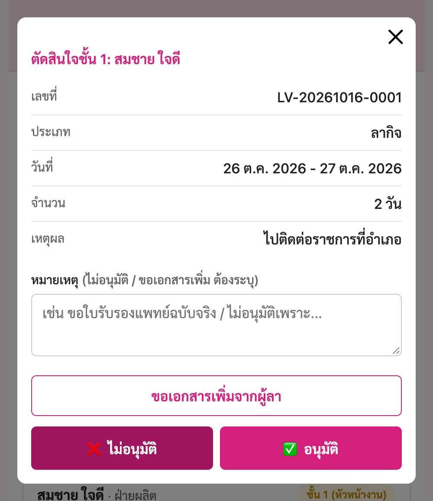
กล่องตัดสินใจ — 3 ทาง: ขอเอกสารเพิ่มจากผู้ลา · ❌ ไม่อนุมัติ · ✅ อนุมัติ
| ผลที่กด | ใครได้แจ้งทางไลน์ |
|---|
| อนุมัติ (ยังไม่ครบชั้น) | ผู้ลา (ผ่านชั้นไหนแล้ว รอใครต่อ) · ผู้อนุมัติชั้นถัดไปได้การ์ดขออนุมัติ |
| อนุมัติครบทุกชั้น | ผู้ลา · หัวหน้างานของผู้ลา · HR ทุกคน (และผู้บริหารในสายถ้า HR ตัดสินแทน) |
| ไม่อนุมัติ | ผู้ลา · หัวหน้างาน (ถ้าคนปฏิเสธไม่ใช่หัวหน้างานเอง) · HR ถ้าปฏิเสธที่ชั้นผู้บริหาร ·
ถ้าปฏิเสธตั้งแต่ชั้น 1 ระบบส่ง รายงานการปฏิเสธ ให้ HR และผู้บริหารในสายรับทราบด้วย |
HR ได้ สำเนาถึง HR ตั้งแต่ตอนผู้ลาส่งใบ (ใบที่เริ่มที่หัวหน้างาน) จึงรู้ว่ามีใบรอหัวหน้าคนไหนอยู่
05
ขอเอกสารเพิ่มจากผู้ลา
ใช้เมื่อยังตัดสินไม่ได้เพราะขาดเอกสาร — ใบลา ยังค้างที่ชั้นของคุณ ไม่ได้อนุมัติหรือปฏิเสธ
- พิมพ์ในช่อง "หมายเหตุ" ว่าต้องการเอกสารอะไรอย่างน้อย 3 ตัวอักษร เช่น "ขอใบรับรองแพทย์ เพราะลาติดกัน 3 วัน"
- กด "ขอเอกสารเพิ่มจากผู้ลา"ผู้ลาได้การ์ด ผู้อนุมัติขอเอกสารเพิ่ม · HR ได้แจ้งด้วยเสมอ
(ถ้าผู้ลายังไม่ผูกไลน์ หน้าจอจะบอกว่า HR ได้รับแจ้งให้ติดต่อผู้ลา)
- รอผู้ลาแนบระหว่างนี้ระบบหยุดเตือนคุณ และเตือนผู้ลาแทน พอผู้ลาแนบแล้วคุณได้การ์ด ผู้ลาแนบเอกสารเพิ่มแล้ว
ในหน้ารายการจะขึ้นแถบเขียว ผู้ลาแนบเอกสารที่ขอแล้ว แล้วค่อยกดตัดสิน
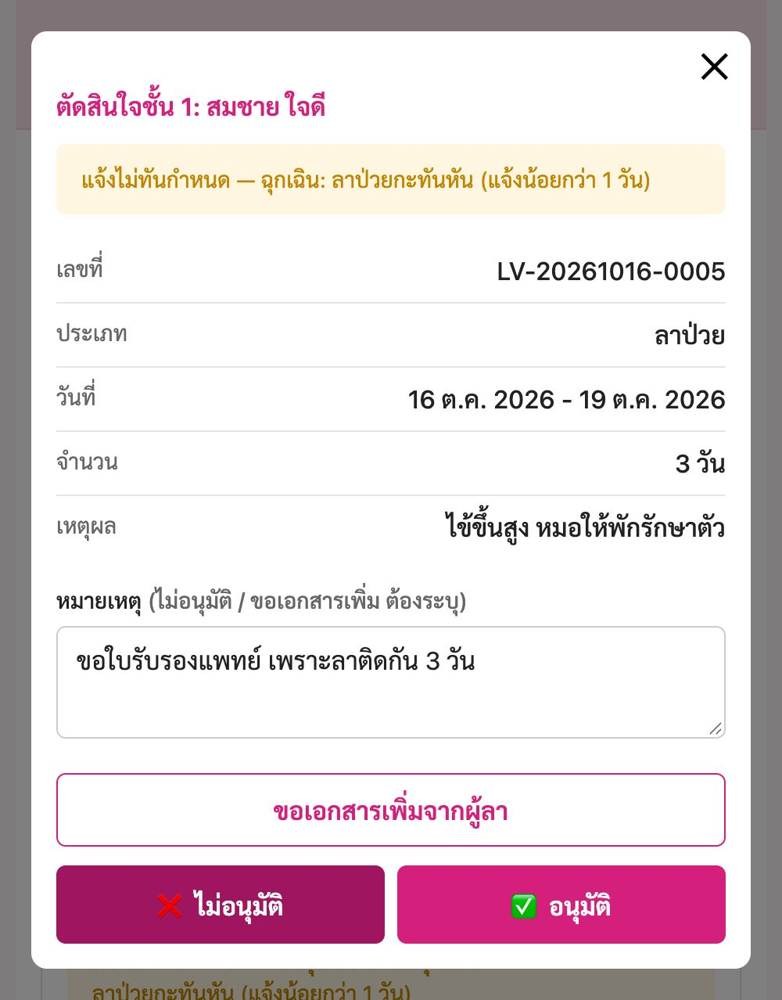
พิมพ์สิ่งที่ต้องการ แล้วกด ขอเอกสารเพิ่มจากผู้ลา
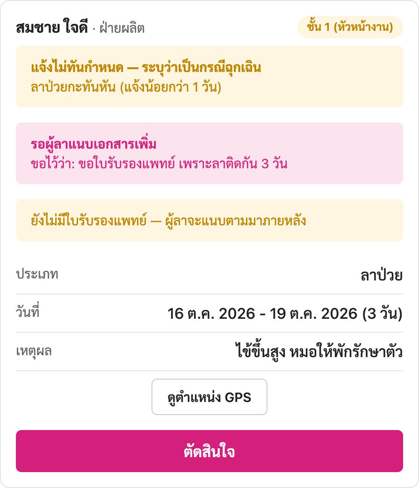
ระหว่างรอ — แถบชมพู รอผู้ลาแนบเอกสารเพิ่ม บอกสิ่งที่ขอไว้
ถ้าไม่อยากรอ จะกดอนุมัติหรือไม่อนุมัติระหว่างนั้นเลยก็ได้ คำขอเอกสารจะถูกปิดไปพร้อมกัน · ขอเอกสารได้เฉพาะใบลา ไม่ใช่ใบขอยกเลิก
06
ผู้บริหารอนุมัติในนามหัวหน้างาน
ถ้าผังตั้งผู้บริหารเป็น หัวหน้างาน ของพนักงานคนไหน ใบลาของคนนั้นจะไปที่ผู้บริหารคนนั้นก่อน
การ์ดและหน้ารายการขึ้นว่า ชั้น 1 (ผู้บริหาร · อนุมัติในนามหัวหน้างาน)
- อนุมัติแล้ว ไม่ผ่าน HR — ถ้าชั้น 3 ในผังมีผู้บริหาร คนอื่น ใบไปต่อที่คนนั้น ถ้าไม่มี ใบอนุมัติครบทันที แล้วระบบค่อยแจ้ง HR
- คนที่อนุมัติขั้นแรกไปแล้ว จะไม่ได้รับใบเดิมซ้ำที่ชั้น 3
- ถ้าผู้บริหารคนนั้นยังรับใบไม่ได้ (ยังไม่ผูกไลน์ / ปิดบัญชี) ใบจะไปที่ HR ให้ตัดสินแทนในขั้นแรก
- ใบแบบนี้ต้องให้ผู้บริหารเป็นคนกดเท่านั้น
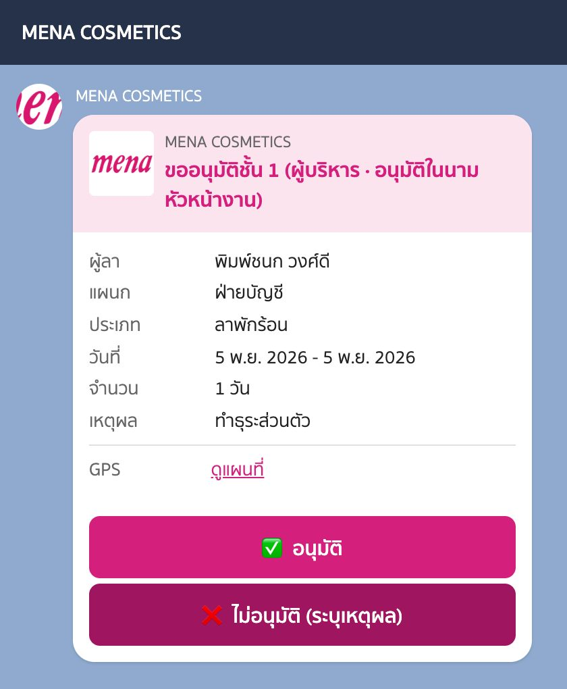
การ์ดที่ผู้บริหารได้รับ
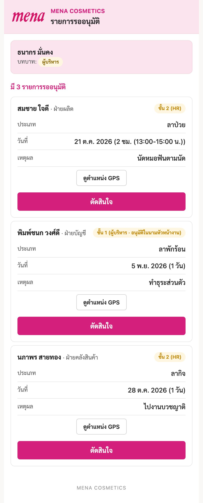
หน้ารายการของผู้บริหาร — ใบชั้น 1 ในนามหัวหน้างาน อยู่รวมกับใบชั้น 2 ที่รอ HR (ผู้บริหารกดแทนได้)
ผู้บริหารดูว่าใครอยู่ในสายของตัวเองได้ที่เมนู จัดการ → ผังอำนาจอนุมัติ ส่วนบนสุด สายงานของฉัน
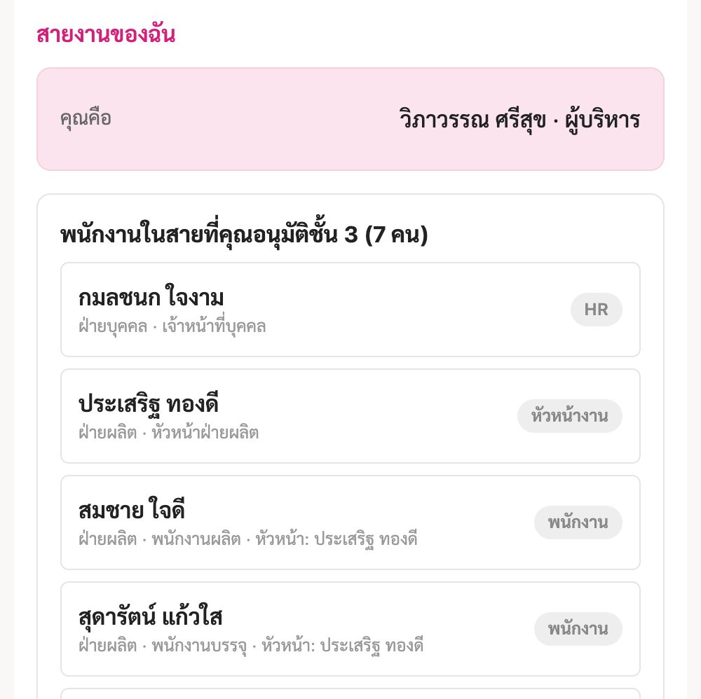
สายงานของฉัน (มุมมองผู้บริหาร) — รายชื่อพนักงานที่คุณเป็นผู้อนุมัติ
07
ใบขอยกเลิกวันลา
พนักงานขอยกเลิกวันลาที่ อนุมัติแล้ว ได้ ระบบสร้าง ใบขอยกเลิก วิ่งผ่านผู้อนุมัติชุดเดิมตามลำดับเดิม
ในรายการจะมีแถบ ใบขอยกเลิกวันลาที่อนุมัติไปแล้ว พร้อมเลขที่ใบเดิม และการ์ดขึ้นว่า ขออนุมัติยกเลิกวันลา ชั้น N
- อนุมัติครบ → ใบลาเดิมเปลี่ยนเป็น ยกเลิกแล้ว และคืนโควตาให้ผู้ลา
- ไม่อนุมัติ → ใบลาเดิมยังอนุมัติอยู่เหมือนเดิม ผู้ลาและ HR ได้แจ้ง
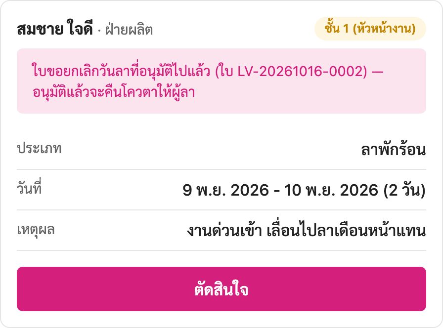
ใบขอยกเลิกในรายการ — เหตุผลคือเหตุผลที่ผู้ลาขอยกเลิก
08
การเตือนซ้ำเมื่อยังไม่มีใครกด
ระบบตรวจทุกชั่วโมง ถ้าใบค้างที่ชั้นไหนเกิน 4 ชั่วโมงทำงาน (ค่าตั้งต้น ฝ่ายบุคคลปรับได้)
จะส่งการ์ด เตือนครั้งที่ N — ใบลายังรอคุณอยู่ นับเฉพาะเวลางาน (ตั้งต้น 08:30–17:30 ของวันทำงาน) — ส่งใบตอนกลางคืนจะไม่ถูกเตือนกลางดึก
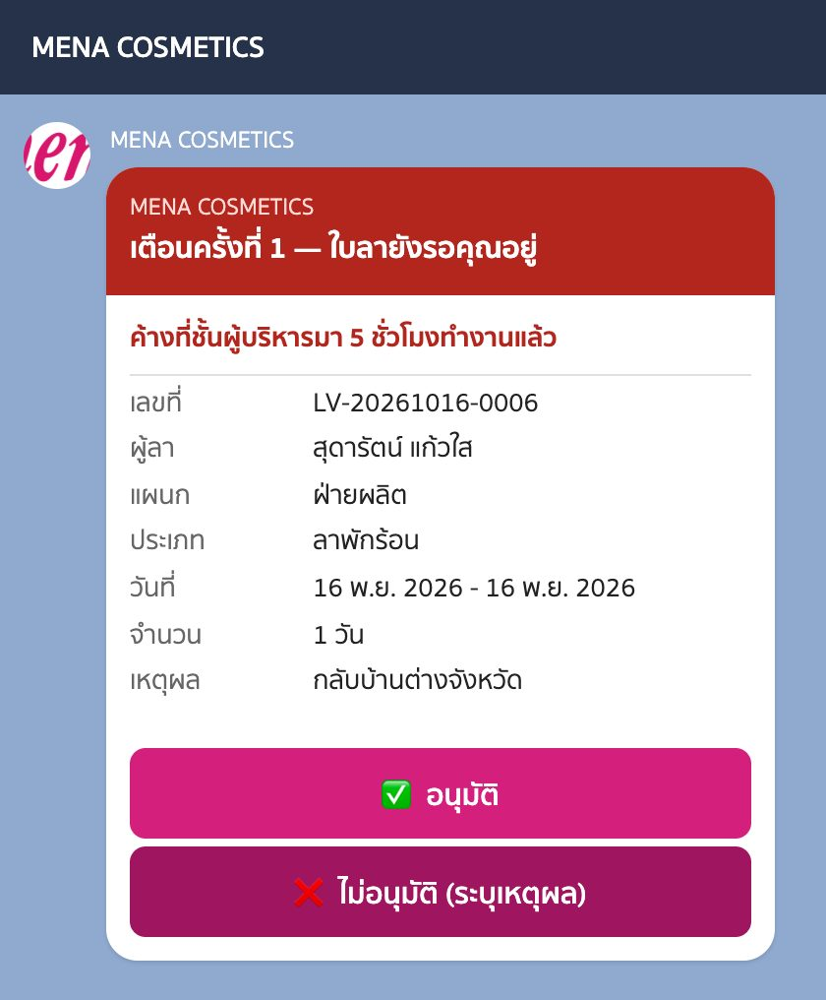
การ์ดเตือน — บอกว่าค้างที่ชั้นไหนมากี่ชั่วโมงทำงาน กดอนุมัติในการ์ดได้เลย
| ค้างที่ | เตือนใคร |
|---|
| ชั้น 1 | หัวหน้างานของผู้ลา |
| ชั้น 2 | HR ทุกคน |
| ชั้น 3 | ผู้บริหารในสาย + แจ้ง HR ทุกรอบ (HR ตัดสินแทนได้) |
| รอผู้ลาแนบเอกสาร | ผู้ลา (ไม่เตือนผู้อนุมัติ) |
| ไม่มีใครรับใบได้เลย | HR ได้การ์ด ใบลาค้างโดยไม่มีผู้อนุมัติ |
พอมีคนกดในชั้นนั้นแล้ว การนับเวลาเริ่มใหม่สำหรับชั้นถัดไป ·
ถ้าโควตาข้อความไลน์ของบริษัทเดือนนั้นหมด การ์ดทุกชนิดรวมถึงการเตือนจะส่งไม่ออก — ให้เปิดเมนู อนุมัติ ดูเอง (รายละเอียดในคู่มือฝ่ายบุคคล)
09
อาการที่เจอบ่อย
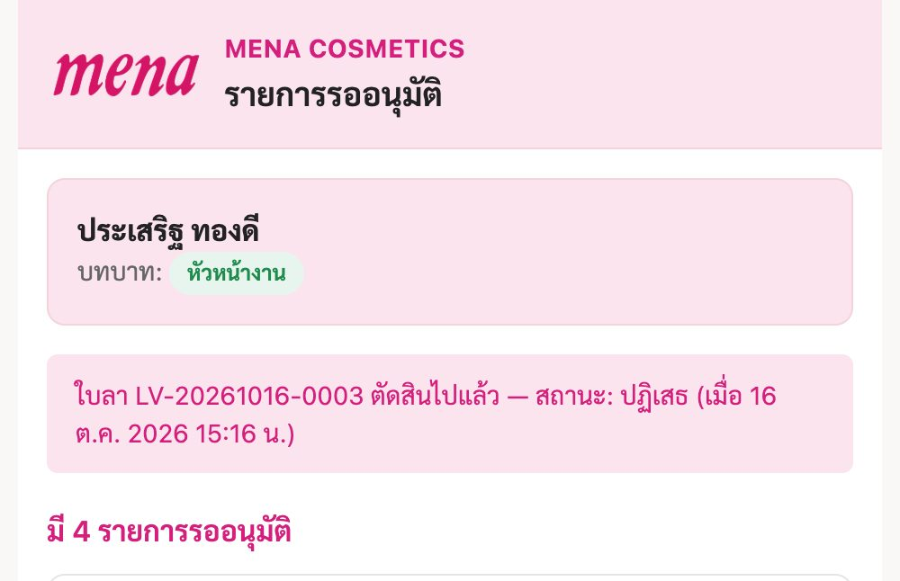
กดจากการ์ดแล้วขึ้นว่า "ตัดสินไปแล้ว" — มีคนตัดสินใบนี้ก่อนคุณ ระบบบอกสถานะและเวลาที่ตัดสิน
| อาการ / ข้อความ | แปลว่าอะไร | ทำอะไร |
|---|
| คุณไม่มีรายการที่ต้องอนุมัติ | บัญชีของคุณยังไม่ได้ใช้งาน หรือยังไม่ได้ผูกบัญชี | ผูกบัญชีก่อน (คู่มือผูกบัญชี) หรือติดต่อฝ่ายบุคคล |
| ไม่มีรายการรออนุมัติ | ไม่มีใบไหนรอคุณ | — |
| ใบลา … ยังรออยู่ แต่ตอนนี้อยู่ที่ผู้อนุมัติชั้นอื่น | เปิดจากการ์ดเก่า ใบเดินไปชั้นอื่นแล้ว | ไม่ต้องทำอะไร |
| มีผู้อื่นตัดสินใจไปแล้ว | HR/ผู้บริหารอีกคนกดก่อนไม่กี่วินาที | โหลดหน้าใหม่ |
| คุณไม่ใช่หัวหน้างานของผู้ลานี้ | ผังอำนาจเปลี่ยนแล้ว | แจ้งฝ่ายบุคคลถ้าผังไม่ถูก |
| ใบลานี้ไม่ได้อยู่ในสายงานของคุณ | ผู้บริหารที่ไม่ได้ถูกติ๊กในผังของผู้ลา | ให้ผู้บริหารในสายเป็นคนกด |
| ตัดสินใบลาของตัวเองไม่ได้ | ใบนั้นเป็นของคุณเอง | รอผู้อนุมัติของคุณ |
| กรุณาระบุเหตุผลการปฏิเสธอย่างน้อย 3 ตัวอักษร | กดไม่อนุมัติโดยไม่พิมพ์หมายเหตุ | พิมพ์เหตุผลแล้วกดใหม่ |
| โหลดรายการไม่สำเร็จ | เน็ตสะดุด (ระบบลองใหม่ให้แล้ว 1 รอบ) | กด ลองอีกครั้ง |
| ไม่ได้รับการ์ดเลยทั้งที่มีคนส่งใบลา | โควตาข้อความไลน์เดือนนี้อาจหมด | เปิดเมนู อนุมัติ ดูเอง และแจ้งฝ่ายบุคคล |